Capítulo 15
El hijo pródigo de la eternidad
Rembrandt van Rijn es un gran pintor holandés. No analizaremos toda su biografía, toda su vida; atendamos solo a su final, a su gran testamento: el cuadro «El hijo pródigo», que se conserva en el Ermitage.
1Rembrandt coincidió en su vida, en su obra, con el más alto florecimiento del arte holandés: vivió en el siglo XVII, una época asombrosa en la historia de Holanda. Holanda era un país completamente singular en Europa. Venció a España en la guerra por su independencia. Y era un país protestante, no católico. Por eso todos los valores aquí estaban ligados a lo que hoy llamamos clase media, a la burguesía media acomodada. En Holanda faltaban por completo los habituales encargos europeos de suntuosos temas religiosos, de suntuosos cuadros que adornaban los palacios. Holanda debía saciar de arte las casas, y Holanda amaba mucho la representación de su propia vida en los cuadros: los propios holandeses, sus casas, su vida cotidiana, su confort.
A estos pintores se los suele llamar «pequeños holandeses».2 Pero no eran en absoluto pequeños: eran pintores muy grandes, y el siglo XVII es la época de su florecimiento. Empezaron a llamarlos «pequeños», con toda probabilidad, en relación con el gran holandés, es decir, con Rembrandt. Es difícil decir hasta qué punto esto es justo, y si en general lo es. Simplemente eran una escuela, tenían valores artísticos comunes, valores culturales comunes y, lo más importante, tenían valores éticos comunes.
Estos valores estaban dirigidos al pueblo holandés. Los holandeses querían mucho a sus maestros y a sus cuadros. Pero Rembrandt era completamente distinto, no como ellos. Era otro hombre, llevaba otro modo de vida y pintaba cuadros completamente distintos. Y si ahora comparamos cualquiera de los cuadros de Rembrandt pintados por él después de 1634–1635 con cualquiera de los cuadros holandeses, surge la perplejidad: ¿es posible que estas personas pudieran vivir en la misma época? Los llamados «pequeños holandeses», como Terborch o Pieter de Hooch, o maestros del bodegón como Heda o van Beyeren, amaban representar el mundo superficial de la vida, el mundo superficial de las cosas, su belleza tranquila, pausada, perfecta. Aquella belleza que era demandada por la mayoría de los holandeses. ¡Cómo se habían cansado de la guerra despiadada con los españoles, cómo se habían cansado del hambre, del frío, cómo se habían cansado del pathos revolucionario, de las cenizas de Claes que golpeaban en el corazón!3
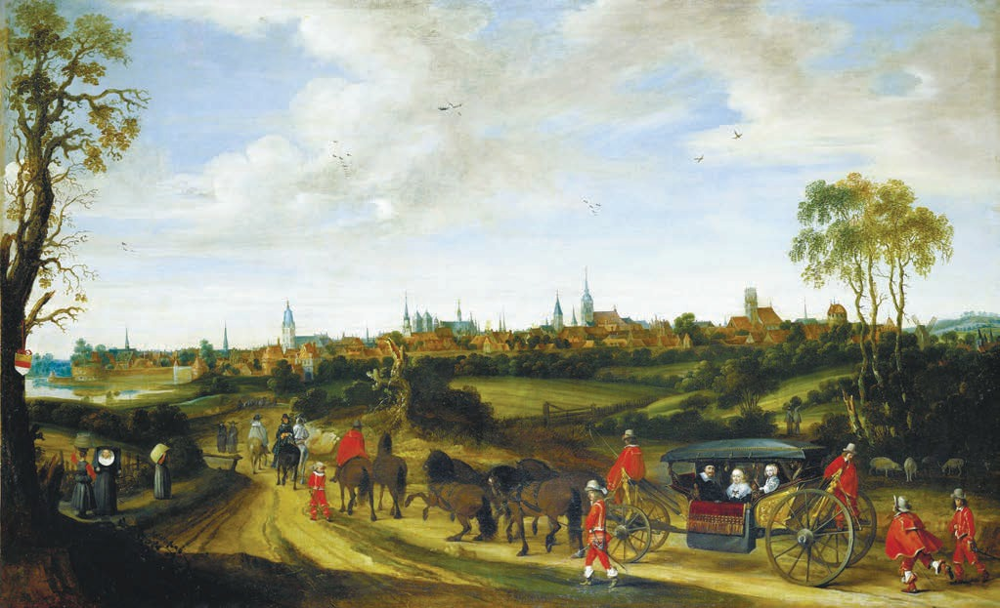
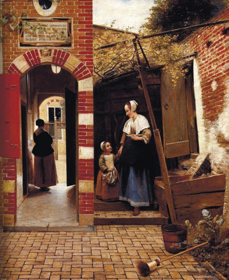
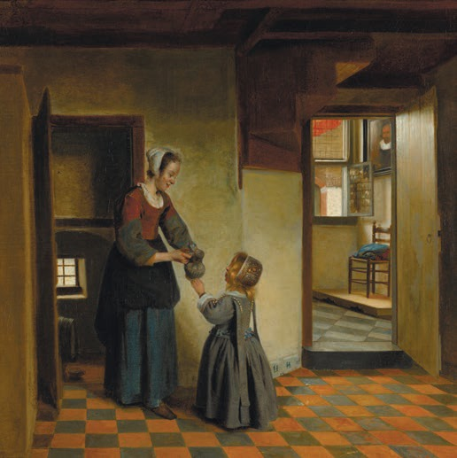
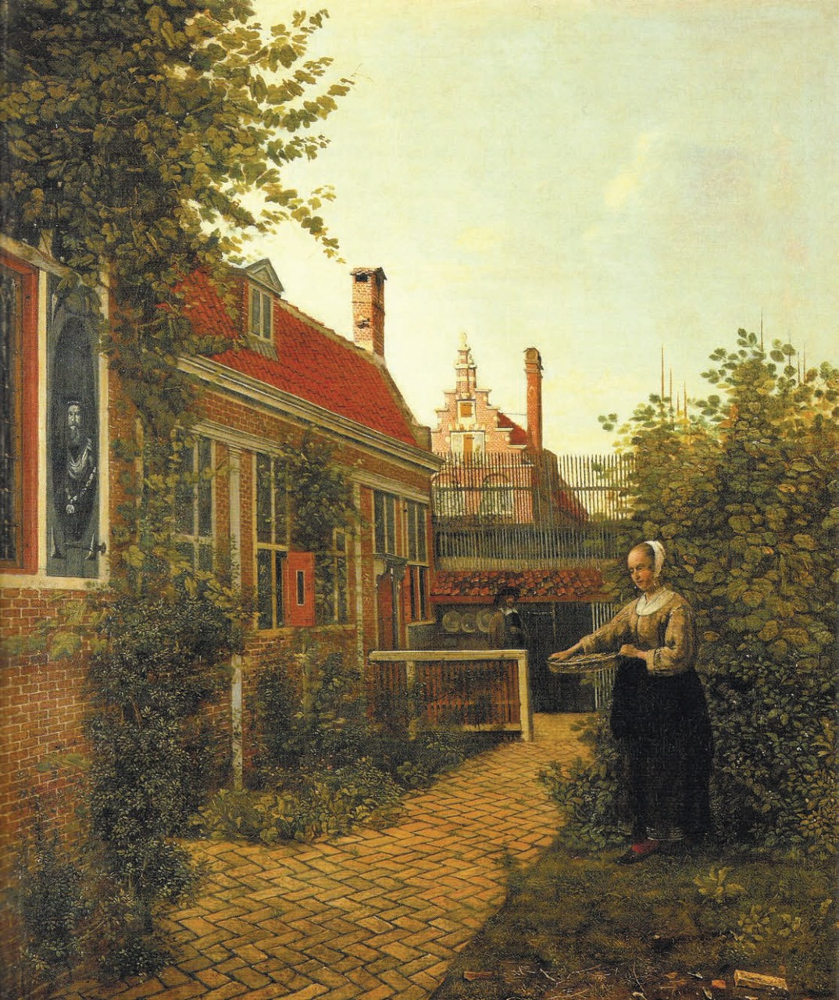
Y, por supuesto, cuando vencieron y cuando Holanda se convirtió en un notable país burgués, cuando empezó a dirigir el comercio europeo, cuando sus barcos surcaban los mares de todo el mundo, querían una vida confortable, saciada, hermosa, decente, y eso representaban en sus cuadros. Se atenían a determinados géneros de pintura: bodegones, representación de casas, retratos, paisajes; esta es una observación muy importante respecto a lo que hablamos. Porque si Rembrandt pintaba retratos, bodegones o paisajes, siempre eran no solo y no del todo retratos y paisajes. En esto se distinguía mucho de todos sus contemporáneos: su pasión, su atención, su interés interior estaban concentrados precisamente en aquella pintura religiosa cuyos encargos en la Holanda del siglo XVII, en un país protestante, eran completamente impopulares.

Miremos uno de los numerosos autorretratos del pintor holandés Rembrandt van Rijn. Puede llamársele «El hombre de todos los tiempos». Está de pie ante nosotros con la ropa de trabajo, con las manos escondidas tras el cinturón, con una extraña gorra blanda, caída como una hoja de bardana, y mira con mucha atención hacia nosotros, hacia las personas que pasan ante él cada día, o más bien escruta con fijeza la lejanía de la intemporalidad. Se siente en un punto en el que se unen el momento de pintar el retrato, es decir, un tiempo determinado, y el tiempo infinito que ve ante sí. En efecto, Rembrandt van Rijn pertenece al tiempo. Y cuanto más nos adentramos en su obra, cuanto más pensamos en él, más preguntas nos suscita esta personalidad.
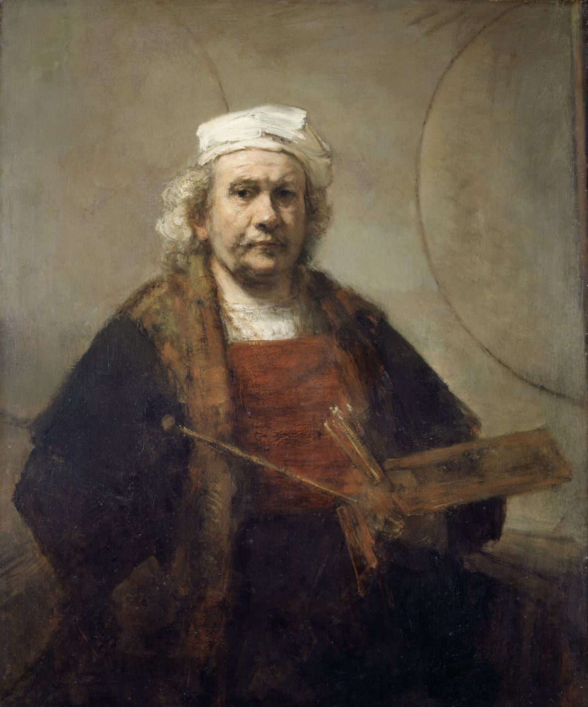
La obra de Rembrandt coincidió con el florecimiento del arte holandés del siglo XVII. El arte holandés floreció con extraordinaria fuerza tras la victoria de la revolución holandesa sobre los españoles.
Los holandeses sufrieron mucho en esa guerra, quedaron completamente extenuados: pasaban hambre, tenían frío. Como en toda guerra que trae destrucción, sufren las personas corrientes, el pueblo llano. Y cuando esa guerra terminó, cuando en Holanda se instauró la paz, los holandeses empezaron a embriagarse con su feliz vida pacífica. Querían que esa vida pacífica, próspera, laboriosa, limpia, bella, no terminara nunca. Y los pintores holandeses reflejaban siempre la aspiración de los holandeses a representar su vida: quizá no del todo tal como era, sino tal como ellos querrían verla en sus retratos, en sus acogedoras casas limpias, en sus bodegones con limones y langostas. Querían ver a muchachas encantadoras, musicando, tocando el clavecín y la guitarra, leyendo cartas de amor y, si enfermaban, enfermando levemente. Eran pintores notables, una escuela completamente singular, asombrosa. Y en Rusia se volvió especialmente popular, porque Pedro el Grande, que amaba mucho Holanda, trabajó en Holanda en el astillero4, aprendiendo construcción naval, e inculcó a Rusia el gusto por los «pequeños holandeses».
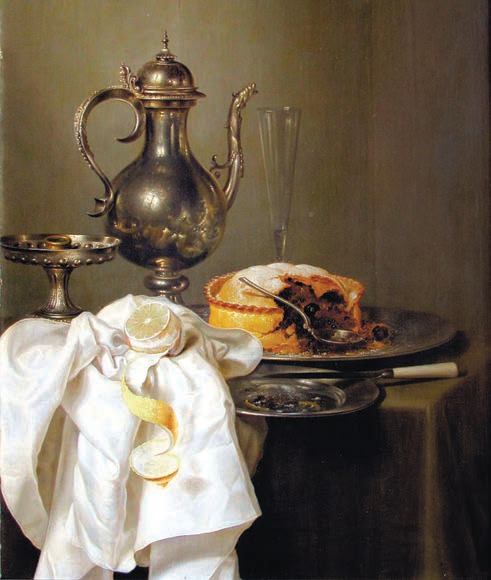
Rusia posee una enorme colección de estos pintores. Pero, como observó el notable estudioso, jefe de la escuela filológica de Tartu, Yuri Mijáilovich Lotman, toda cultura está estructurada, y tiene su escuela clásica, su orden, sus principios éticos, estéticos y artísticos claramente expresados. Pero obligatoriamente en esa estructura o en esa cultura hay pérdidas. ¡Y así es! Una de esas pérdidas de la escuela clásica holandesa fue, sin duda, Rembrandt van Rijn. En la historia del arte se suele llamar a estos pintores «pequeños holandeses», y a Rembrandt, «el gran holandés». Pero esta división es incorrecta: ellos no eran «pequeños», y él no era «grande». Simplemente era otro, completamente otro.
Y si ellos representaban una cosa, veían una cosa, querían esas hermosas faldas de seda, esa bella vajilla y esas casas limpias, a él le interesaba algo completamente distinto: no lo exterior, sino lo interior. Y más que nada le conmovían las entrañas del ser humano, las entrañas del alma humana. Quizá por eso tiene una cantidad tan enorme de autorretratos, ejecutados tanto en pintura como en la técnica del aguafuerte, en la que hasta hoy es uno de los mayores maestros del mundo. Le interesaba esa vida invisible que es la principal, que es la vida esencial. Y a los «pequeños holandeses» no les interesaba esa vida invisible; les interesaba la epidermis de la vida, las imágenes superficiales, y eran hermosas. Aquí la elección carece de sentido.
Rembrandt procedía de la ciudad de Leiden y era hijo de un molinero acomodado. Era allí como el patito feo. Simplemente como un querubín: «nos trajo algunas canciones paradisíacas».5 Era completamente distinto.
Y su vida se distingue del curso habitual del programa vital. Como si para él hubiese sido elegido un destino especial, que él recorrió hasta el final. Precisamente por eso, deseando infinitamente unirse a la escuela holandesa, tener clientes, cumplir encargos, comprendió muy pronto, y a quienes lo rodeaban les era evidente, que eso era simplemente imposible en virtud de su absoluta otredad. Y esa otredad estaba en él mismo. No solo le interesaba la profunda naturaleza interior del hombre, sino que le interesaba además otra cuestión. Quizá precisamente con ese interés se relaciona el que pintara tal cantidad de cuadros sobre temas bíblico-evangélicos, que constituyen dos tercios de su obra, mientras que los holandeses no pintaban cuadros sobre esos temas. Cuando era muy joven, estudió en el taller de Utrecht, con el pintor Terbrugghen.6 Terbrugghen sí pintaba temas bíblicos. Tiene un cuadro que representa a José el Carpintero.7
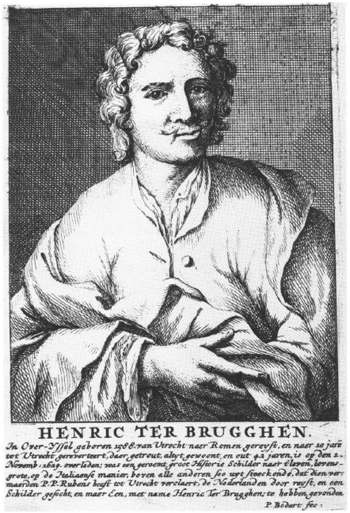
Se llamaban a sí mismos «caravaggistas de Utrecht». Caravaggio influyó en la pintura europea, en la formación del lenguaje realista europeo en la pintura. Y en el cuadro, José cepilla las tablas: es un anciano fuerte, un carpintero corriente, un ebanista, y un niño pequeño, muy lindo, le sostiene la lámpara. Es decir, el tema es como bíblico y, al mismo tiempo, uno lo lee como un tema cotidiano, corriente. Para Rembrandt era importante el misterio no solo del ser humano, sino también los misterios históricos. Por supuesto, era un hombre profundamente religioso, y sin embargo había en él una peculiaridad extraordinaria. Estaba casado, muy afortunadamente, como diríamos ahora. Estaba casado con una de las herederas de la mayor fortuna de Ámsterdam, con Saskia van Uylenburgh.
8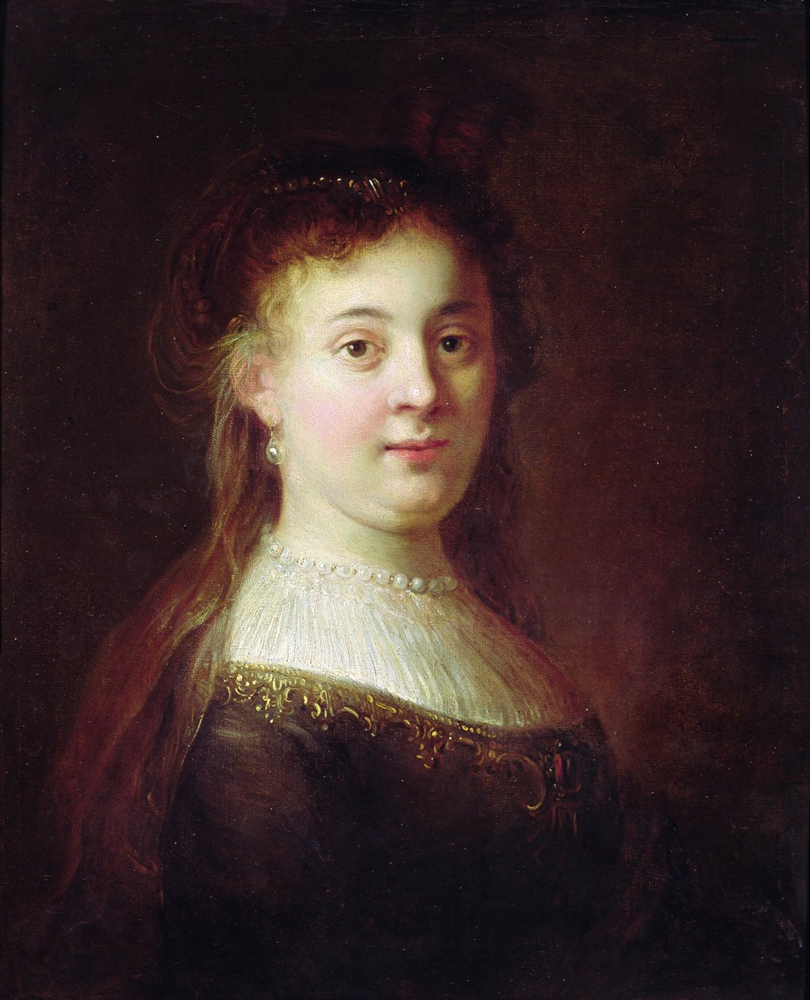
Todos estaban contra ese matrimonio, pero Saskia era una dama así: si lo decía, conseguía lo que quería. Amaba a ese hombre y se casó con él. Por eso él podía permitirse muchas cosas que fuera de ese matrimonio no habría podido permitirse. Y la pasión de él era el mercado, el mercado de Ámsterdam. Le gustaba mucho ir al mercado de Ámsterdam, porque allí se podían encontrar cosas asombrosas, y él buscaba esas cosas. Eran antiguos manuscritos árabes que no podía leer, pero sobre los que pasaba simplemente los dedos para palpar todas aquellas escrituras, acariciaba las cubiertas. Compraba telas antiguas asombrosas, armas, muebles, incluso animales. Le fascinaba el tiempo que vivía en esas cosas, transformándolas en espléndidos, como diríamos ahora, artefactos.
Hay un documento interesante: el inventario de la casa de Rembrandt. Cuando abandonaba su casa en Ámsterdam, se hizo un inventario para vender esa casa.9 Y por ese inventario comprendemos que vivía en un espacio único, anticuario, histórico-artístico, del que simplemente no salía. ¡Qué antigüedad había allí, qué Oriente había allí! ¡Qué antigüedades orientales había allí! El deseo de entrar, por así decirlo, en la historia, en su interior, de sentirse parte de ese espacio descrito por la Biblia: es una cualidad o un sentimiento completamente asombroso. Tiene raíces psicológicas muy profundas. Rembrandt era otro, y todo el mundo con el que se rodeaba era distinto. Miren sus cuadros sobre temas bíblicos10 y verán que a través de todos los cuadros pasa un extraño pensamiento sobre el tiempo, que cambia los trajes, el ambiente, la decoración de sus vidas. Y el tiempo no tiene poder sobre las pasiones humanas, sobre el alma humana, sobre los actos humanos, la pasión, el amor, la traición, la infidelidad, las lágrimas, la desesperación, el amor: esto es completamente asombroso.
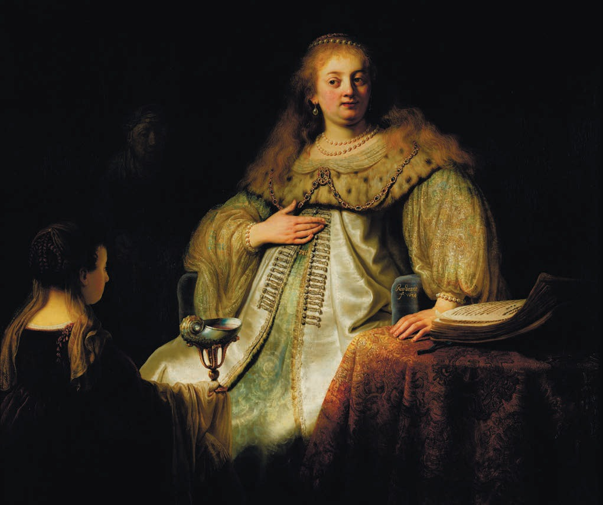
El destino dispuso que Rembrandt van Rijn estuviera destinado a perder sus vínculos con el mundo, con los clientes, con los pintores, a causa de su otredad; a perder sus vínculos con la parentela; a perder sucesivamente a sus seres queridos. Y al mismo tiempo no solo a no perderse a sí mismo, sino a sumergirse cada vez más y más en su único y singular mundo. Cuando quedó prácticamente solo, su casa fue vendida, se fueron las cosas artísticas que le eran valiosas, que amaba ver, tocar, que amaba mucho pintar, y él también se marchó. Y de la parte corriente de Ámsterdam se trasladó al gueto judío de Ámsterdam11, con el que estaba muy vinculado: pintaba muy a menudo a los habitantes del gueto de Ámsterdam. Holanda era muy tolerante en materia de fe, pero en este caso ellos encarnaban para él, por así decirlo, a los representantes del mundo bíblico, una parte de esa historia física bíblica. Probablemente esto explica su interés por esos rostros, por esas manos nudosas, por esa contemplación profunda.
«El hijo pródigo» es el testamento de Rembrandt, prácticamente el último cuadro que pintó en su vida. En cualquier caso, así lo datan los historiadores del arte: 166912, el año de su muerte. Existe la suposición de que Rembrandt se dirigió al tema del «Hijo pródigo» en más de una ocasión. Tiene aguafuertes con ese mismo título13: «El hijo pródigo». En general hay que decir que este tema estaba bastante difundido en los siglos XVI y XVII. Cuadros muy interesantes sobre este tema los pintó El Bosco, especialmente un cuadro que representa al hijo pródigo abandonando la casa de su padre.
14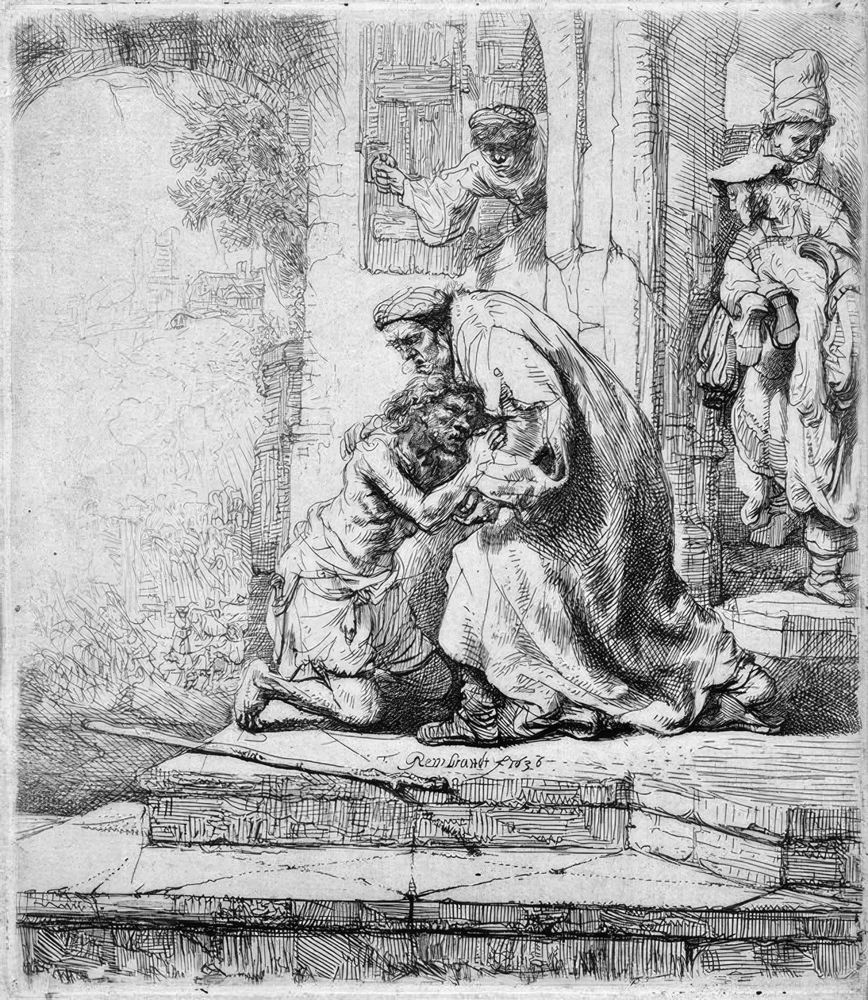
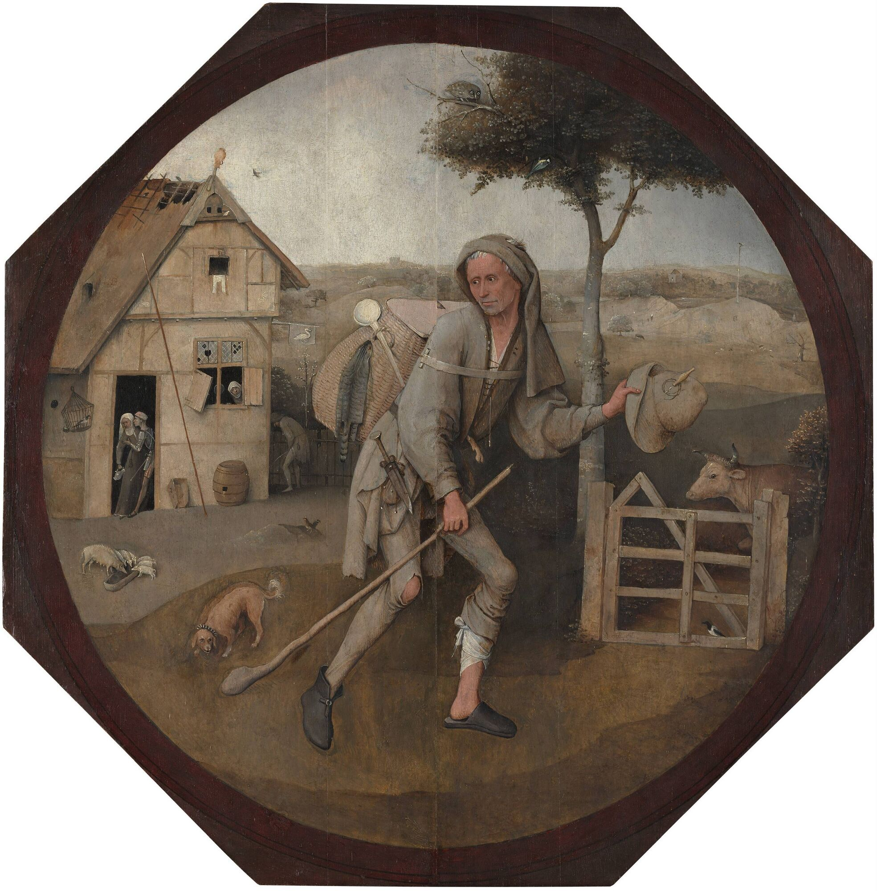
Y Rembrandt se dirigió también a este tema en más de una ocasión. Más aún: Rembrandt tiene un cuadro célebre —incluso las personas que conocen poco a Rembrandt conocen bien esta obra suya—. Se titula «Autorretrato con Saskia en las rodillas», pintado en 1635, expuesto en la Galería de Dresde.15 Se considera que este cuadro también está pintado según el tema del «Hijo pródigo». Pero el tema de este cuadro es el siguiente: el hijo pródigo dilapida la fortuna de su padre, y el pintor representa precisamente el momento de su juerga y sus francachelas. Los investigadores consideran que este cuadro puede ser una de las variantes del «Hijo pródigo». ¿Por qué no estar de acuerdo con ellos? Después de todo, el cuadro final de su vida también está vinculado con el hijo pródigo, ya que él se identificaba un poco con ese personaje.
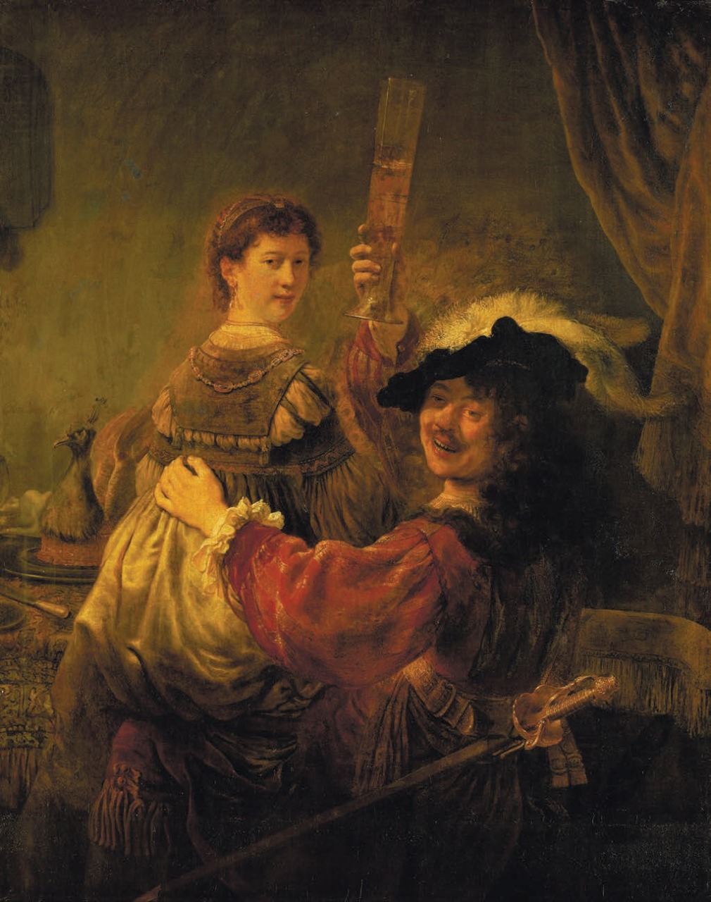
Hay un hombre cuyo nombre es imposible no mencionar al hablar de Rembrandt o de la técnica de los viejos maestros: es un gran investigador, Armen Vagarshákovich Vartanián. Hizo una brillante copia del «Autorretrato con Saskia en las rodillas». La copia era tan buena que los investigadores prácticamente no podían distinguirla del original. En general existe una historia aparte de estas copias de Armen Vartanián. Contó que para pintar como pintaba Rembrandt, la técnica que existía entonces en Holanda era insuficiente. Y Rembrandt creó su propia técnica, y Vartanián reprodujo su paleta. Explicó que Rembrandt no pintaba del todo con colores al óleo, sino que en su paleta había tacitas y resinas muy espesas. Y aquellos colores que Rembrandt prefería (dorados, ocres, rojo vino —colores pesados—), los pintaba con esas resinas viscosas. Creaban un efecto extraordinario. Por eso cuando ustedes miran el cuadro «Artajerjes, Amán y Ester»16, que se conserva en nuestro Museo de Bellas Artes, y miran la cola dorada de Ester, tienen la impresión de que está completamente viva, de que sienten, por así decirlo, el vivo brillo húmedo del oro: precisamente gracias a esa técnica.
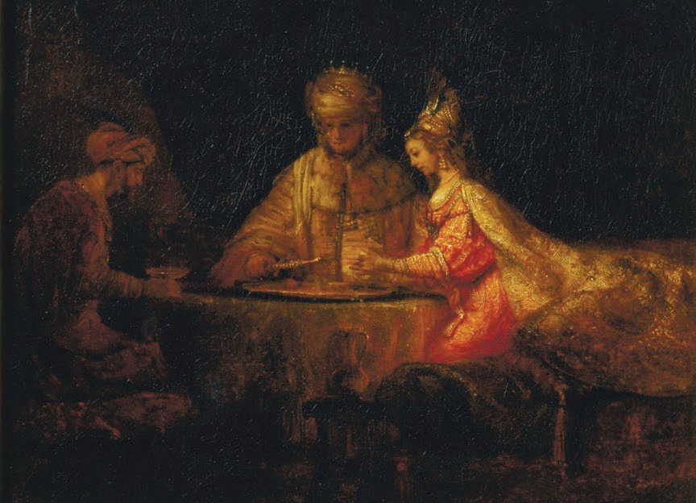
Y Vartanián hizo la copia del «Autorretrato con Saskia en las rodillas» precisamente con la técnica de Rembrandt, con esas pesadas resinas al óleo. Por supuesto, Armen Vagarshákovich era simplemente un hombre genial en la recreación de la técnica de los viejos maestros. No es casual, porque el pintor que va en otra dirección o busca su propio mundo busca siempre también un lenguaje adecuado para expresarlo. El pintor innovador en cualquier campo —ya sea la poesía, la literatura, el arte o incluso el diseño— crea siempre su propia técnica, su propio lenguaje peculiar. Y su mundo propio no se realiza si no tiene un lenguaje para describirlo. Cuando ustedes miran el «Autorretrato con Saskia en las rodillas», que los investigadores consideran una de las variantes del «Hijo pródigo», se crea la impresión de que Rembrandt capta el instante en que nos mira, exultante, feliz, cuando nos dice: «¡Uníos a mi alegría, a mi amor, a mi gozo secreto, a mi vida secreta, y mirad qué mujer tan hermosa tengo, cómo vivo!»
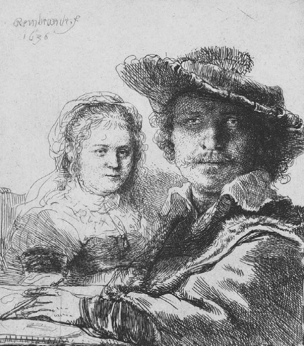
Fíjense: esto ocurre en un punto muy extraño, en la frontera de un tiempo extraño y del futuro, es decir, de aquello que somos nosotros.
De Rembrandt se dice que es un pintor de la luz y la sombra, que es el mayor maestro de la luz y la sombra. Esto es justo respecto a los caravaggistas clásicos. Sí, son maestros de la luz y la sombra, pero Rembrandt era maestro no de la luz y la sombra: era maestro del surgir de la sombra. Como si hubiera un cristal negro de espejo, un espejo negro o un vidrio ahumado; uno empieza a limpiarlo y de pronto ve que tras ese vidrio comienza un resplandor dorado y empiezan a fluir hacia nosotros imágenes.
Es aquello de lo que hablaba Zabolotski: «¿Recuerdas cómo de las tinieblas de lo pasado...?»17. Emergen, como de las tinieblas de lo pasado, emergen por un breve instante, se detienen ante nosotros y quedan fijos para siempre. Y un asombroso sentido del tiempo, que se compone de eternidad, de un tiempo desconocido para él por delante y de un tiempo instantáneo. Los holandeses no tenían en el arte esa categoría del tiempo en absoluto: pintaban como si pintaran casas de muñecas. No tienen tiempo en absoluto: tienen antigüedad objetual. Y Rembrandt tiene tiempo vivo, que lo inquietaba y lo rodeaba muy intensamente.
Todo este relato sobre Rembrandt avanza hacia su cuadro-testamento final, que se conserva en el Ermitage: hacia «El hijo pródigo».
«El hijo pródigo» es un cuadro sobre el que se ha escrito muchísimo. Los contemporáneos de Rembrandt, desde luego, no escribieron sobre él, porque los contemporáneos lo olvidaron, no tenían la menor noticia de él. Para ellos ni siquiera existía de modo especial; tampoco se preocupaban por él. En general se tiene la impresión de que Holanda no ama mucho a Rembrandt. Sabe cuán grande es, sabe cuánto vale, sabe cuán valioso es, pero no hay impresión de que sea grato a Holanda hasta hoy. Si no, en las numerosas películas sobre Rembrandt no se enumerarían diversas bajezas de su vida, que fueron o no fueron: nadie lo sabe. Nadie lo sabe, pero obligatoriamente se hace hincapié en ellas. Los cuadros religiosos de Rembrandt, por alguna razón, no se muestran en esas películas. Solo se muestran cuadros fallidos sobre algún tema, algunos retratos, pero cuadros religiosos no hay. No puede decirse que el amor de Holanda hacia Rembrandt sea muy grande. Holanda se queda con sus queridos «pequeños holandeses», y Rembrandt sigue sin ser querido.
«El hijo pródigo» atrae la atención de pintores, investigadores y escritores, y especialmente mucho escribió sobre este cuadro Vasili Kandinski18. A Vasili Kandinski le atraía mucho Rembrandt. Puede decirse que Rembrandt es uno de los primeros abstraccionistas del arte universal. No porque pinte abstracciones, sino porque su propia pintura no describe el objeto: la pintura del objeto no coincide con el color y la forma de ese objeto; expresa más bien su esencia artística o emocional, y no su función objetual-cotidiana. Rembrandt siguió un camino impensable. No es que haya adelantado mucho a su tiempo tanto en la pintura como en la psicología del arte, sino que realmente creó un precedente de otra reflexión pictórica y psicológica, temporal, sobre la historia, el amor, el hombre.
El cuadro «El hijo pródigo» fue adquirido por el príncipe Golitsin para Catalina II en Francia en 1766. Fue comprado a los herederos de Colbert19, que vivieron largo tiempo en Holanda y, al parecer, allí adquirieron el cuadro. Catalina II encargó a Golitsin comprar este cuadro: eso dice mucho. En general hay que decir que Rusia posee una de las colecciones más notables de cuadros de Rembrandt, un conjunto realmente único de obras, entre las que hay obras maestras como «Dánae», «El sacrificio de Abraham», «Autorretrato con Saskia»20, «Retrato de un anciano de rojo», pero, por supuesto, la principal entre ellas es «El regreso del hijo pródigo».
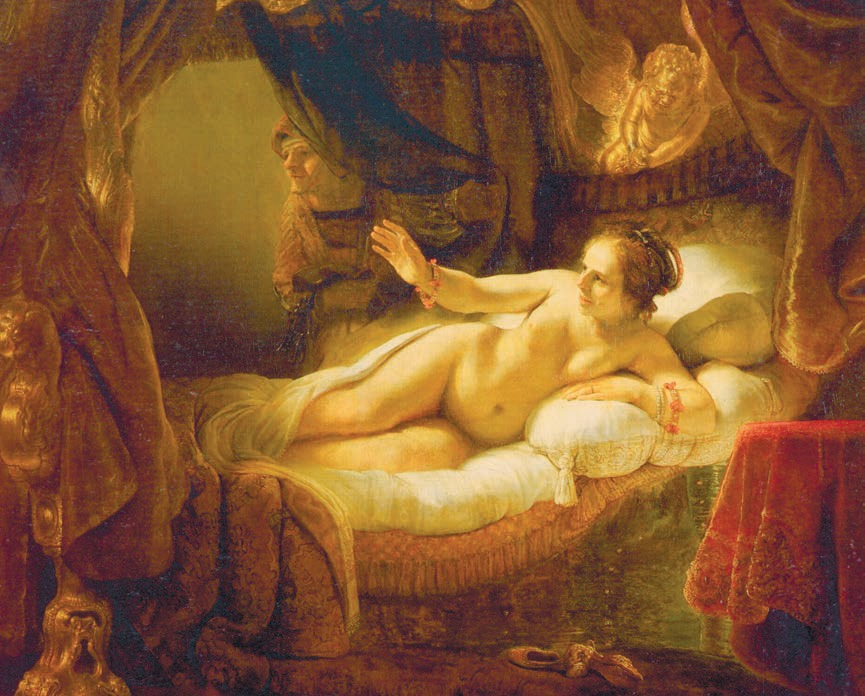
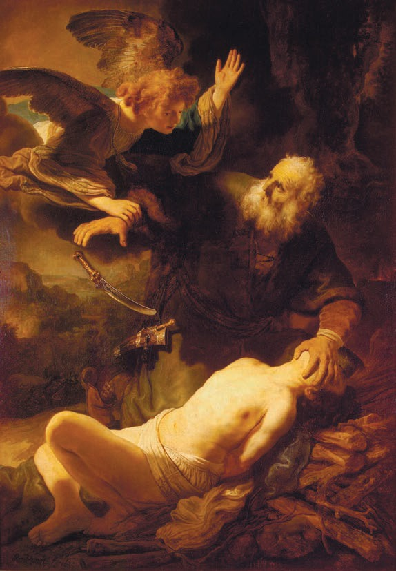
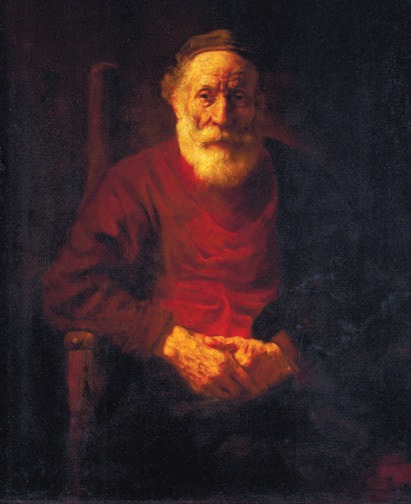
«El regreso del hijo pródigo»: ¿qué es este cuadro? Es el final de la historia bíblica, cuando el joven, tras abandonar la casa, quemó su vida, dilapidó toda la fortuna, mucho quiso, nada alcanzó, intentó comenzar de nuevo y de nuevo no pudo alcanzar nada. Con toda probabilidad, le estorbaban pasiones internas desenfrenadas. Su camino fue, al parecer, muy pesado, porque el hombre que llegó al umbral de su padre, el hombre que describe Rembrandt, tiene la cabeza rapada de un penado. Quizá tenía a sus espaldas el presidio.
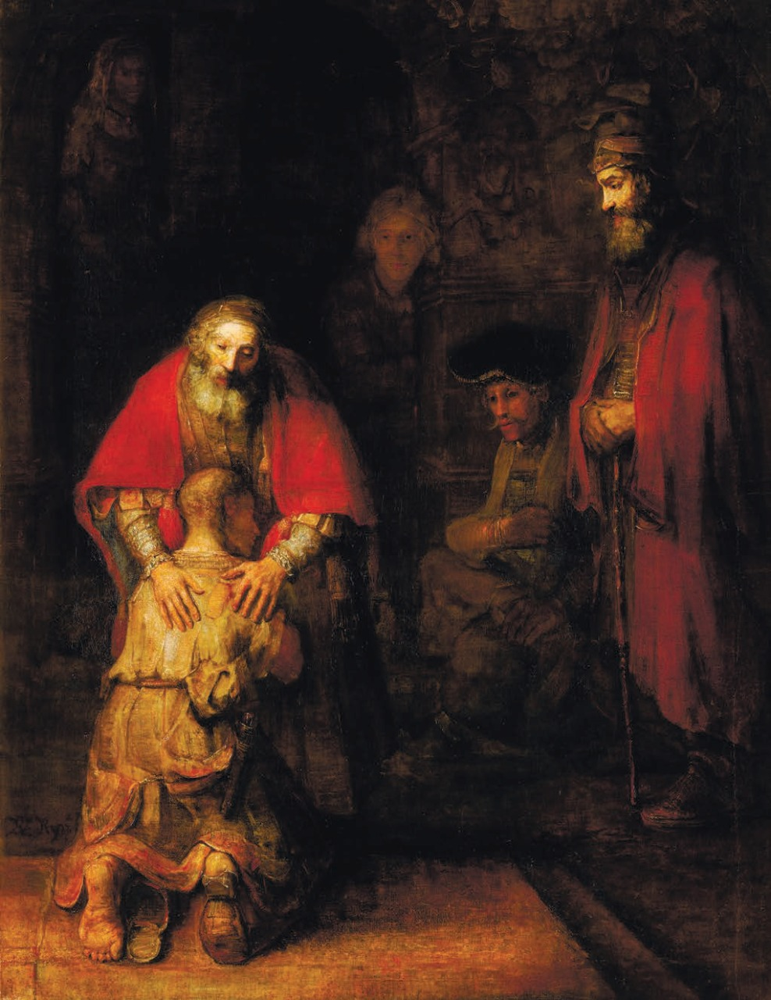
En el cuadro vemos a un hombre que ha vivido su vida, que ha gastado las suelas de sus pies, es decir, en sentido figurado, absolutamente incapaz de seguir. Y llega al umbral de su padre: de aquel cuyas esperanzas no justificó. No se trata siquiera de que dilapidara los bienes paternos: simplemente no justificó el amor paterno, las esperanzas paternas. Rembrandt es un narrador asombroso; siempre construye magníficamente la dramaturgia de sus relatos, y la construye mucho más interesante que los «pequeños holandeses», porque estos representan casas de muñecas. No tanto narran como muestran personajes marioneta, inmovilizados, en los cuadros.
Y en Rembrandt hay siempre un relato vivo de lo que ocurre. Más aún: ese relato vivo de lo que ocurre emplea muy a menudo lo que la dramaturgia narrativa en las artes plásticas no emplea, a saber: la pausa. Esa pausa la encontró en su día Giotto21, y muy pocos pintores cuelgan el momento culminante de su dramaturgia de esa pausa. El hijo que ha regresado al umbral de su padre, que ha dilapidado todo —todo el caudal de sus fuerzas, de sus medios, de sus ambiciones—. Un penado desengañado. Un final terrible de vida.
Y el padre sale a su encuentro, y el hijo se echa en silencio sobre el padre, y el padre pone las manos sobre su espalda. No hablemos ahora de cómo está pintado este cuadro, porque es casi inútil. Hablar de la pintura de Rembrandt es muy difícil, como de toda pintura verdadera, y no simplemente del coloreado de una superficie. Es ese resplandor, como si desde las tinieblas arrancara un rayo dorado un cuadro de luz. En ese rayo dorado se encienden, se prenden y llamean el escarlata sobre los hombros del padre, los andrajos dorados sobre el cuerpo del hijo, y ese extraño perfil, casi en estado de desmayo, reclinado sobre el padre, esas manos del padre sobre la espalda del hijo. Es simplemente un cuadro asombroso. Es más que un cuadro. Cuando uno mira las obras de Rembrandt, no puede comprender en absoluto que esto sea la Holanda del siglo XVII. Muchos cuadros de Rembrandt, sobre todo los tardíos, por ejemplo «El descendimiento de la cruz»22 o algunos aguafuertes, por extraño que parezca, se asocian más con el mundo interior de Fiódor Mijáilovich Dostoievski que con los contemporáneos de Rembrandt.
En la historia del arte se discute qué representan los otros personajes situados en el espacio compositivo del cuadro. El centro del cuadro, como todos advierten, está desplazado a la izquierda. Y precisamente aquí, por así decirlo, ocurre toda la acción, mientras que en el lado derecho otros personajes construyen la profundidad del espacio. ¿Quiénes son, esos personajes? Hay una multitud de suposiciones sobre quiénes son esas personas. De un modo u otro, son testigos de lo que ocurre. Ven el regreso de este hombre, en el umbral de su muerte, al umbral de su padre, que también está en el umbral de su muerte.
En el arte universal hay cuadros que son más que pintura. Los cuadros de Rembrandt son más que cuadros, salen de los límites de la simple pintura. Es una pintura grandiosa, porque tiene un lenguaje complejo y rico, puede dar impulso a su reflexión sobre algo más. ¿Sobre qué? Sobre uno de los temas más importantes y actuales. Rembrandt pintó un cuadro sobre qué es el pecado y la misericordia. ¿Y qué puede haber hoy para nosotros más importante que esto? Debemos conocer nuestro pecado, debemos confiar en la misericordia divina. Es un cuadro sobre el pecado y la misericordia, sobre lo más importante que en los minutos fatales deben recordar los hombres.
El cuadro «El hijo pródigo» es una de las mayores obras maestras de la pintura universal. ¿En qué pensaba el pintor cuando lo pintaba? Probablemente pensaba en que él, hijo pródigo en esta vida, espera recibir de su padre el perdón, el perdón silencioso y la misericordia.
El cuadro nunca fue olvidado. Muchísimas personas vienen expresamente para verlo; lo necesitan. Es un cuadro que tiene un eco muy largo. Y recordemos que una de las últimas resonancias de este cuadro es uno de los finales de la película de Andréi Arsénievich Tarkovski «Solaris». En su película hay varios finales, y uno de ellos es el regreso de Kris Kelvin a la Tierra desde el planeta Solaris. Kris Kelvin, que se quedó en la estación en el océano mundial, según la película regresa a la casa de su padre, metafísicamente regresa.23 Y Tarkovski construye ese regreso, ese final, según la composición del «Hijo pródigo» de Rembrandt: Kris Kelvin está de rodillas ante su padre, e incluso el giro de la cabeza es el mismo que en el cuadro de Rembrandt. Cae igualmente de rodillas: el hijo pródigo de la eternidad y del espacio eterno, que abandonó la Tierra, su casa, cae de rodillas ante su padre. Tarkovski repite literalmente la composición de Rembrandt. Esto es muy asombroso, porque para crear conscientemente esa composición, que hace eco lejano con el cuadro de Rembrandt, el autor debe tener vivencias del mismo nivel, y son importantes no solo para Kris Kelvin. Probablemente el propio Andréi Arsénievich Tarkovski vivió algo semejante en relación con su padre, el poeta Arseni Aleksándrovich Tarkovski. Sea como fuere, ese final de «Solaris» produce una impresión muy profunda por su ternura y su dramatismo. Y esto en sí mismo es muy significativo, porque es realmente el tema del extravío y el regreso, del pecado y la misericordia. Es aquello sobre lo que están escritos los versos de Arseni Aleksándrovich Tarkovski:
Notas del editor
1. El título canónico del cuadro del Ermitage es «El regreso del hijo pródigo» (h. 1666–1669). La autora alterna a lo largo del capítulo «El hijo pródigo» y «El regreso del hijo pródigo»; se ha respetado su uso.
2. El término «pequeños holandeses» (en ruso, «малые голландцы»; en neerlandés se habla de «kleinmeesters») alude sobre todo al pequeño formato de los cuadros de gabinete y a la modestia de sus temas, pensados para casas particulares, y no a una comparación con Rembrandt. La propia autora matiza enseguida que la etiqueta no expresa una jerarquía de calidad.
3. Alusión a «La leyenda de Ulenspiegel» (1867), de Charles de Coster. Claes, el padre de Till, muere en la hoguera de la Inquisición, y su hijo lleva al cuello una bolsita con sus cenizas: «Las cenizas de Claes golpean en mi corazón». La novela se ambienta en la sublevación de los Países Bajos contra España.
4. Pedro I trabajó como carpintero de ribera en 1697, durante la «Gran Embajada», primero en Zaandam y después en los astilleros de la Compañía de las Indias Orientales en Ámsterdam.
5. Cita de «Mozart y Salieri» (1830), de Pushkin. Salieri dice de Mozart: «Como un querubín, / nos trajo algunas canciones del paraíso».
6. Error de la autora. Rembrandt no se formó en Utrecht ni con Hendrick ter Brugghen. Sus maestros fueron Jacob van Swanenburgh, en Leiden (h. 1621–1624), y Pieter Lastman, en Ámsterdam (h. 1624–1625). Lastman era un pintor de historia de formación italiana. El caravaggismo de Utrecht (Ter Brugghen, Honthorst, Baburen) influyó en el joven Rembrandt de Leiden, pero de forma indirecta.
7. El cuadro que se describe a continuación (José cepillando una tabla mientras un niño le alumbra con una vela) no es de Ter Brugghen. Es «San José carpintero» (h. 1642, Museo del Louvre), del lorenés Georges de La Tour. No se conoce ninguna obra de Ter Brugghen con ese tema. Por esa atribución errónea no se reproduce aquí.
8. Saskia van Uylenburgh (1612–1642) era hija de Rombertus van Uylenburgh, burgomaestre de Leeuwarden, en Frisia. Aportó al matrimonio (1634) una dote considerable, pero exagera la autora al hablar de «la mayor fortuna de Ámsterdam»: su familia era frisona y, en Ámsterdam, Rembrandt la conoció a través de su primo, el marchante Hendrick van Uylenburgh.
9. El inventario se levantó en julio de 1656, cuando Rembrandt solicitó la «cessio bonorum» (una forma de quiebra) y sus bienes quedaron bajo administración judicial. Sus colecciones se subastaron en 1657–1658 y la casa de la Breestraat se vendió en 1658. Hoy es el Museo Casa de Rembrandt.
10. La «Artemisa» del Prado no se menciona en el texto, pero el índice de láminas del libro la asigna a este capítulo. Se coloca aquí como ejemplo de esos personajes históricos y bíblicos vestidos con los ropajes y joyas de la colección del pintor. La modelo suele identificarse con Saskia. La identificación del tema (Artemisa o Sofonisba) es discutida.
11. La autora invierte los hechos. Desde 1639 Rembrandt vivía en la Sint-Antoniesbreestraat (hoy Jodenbreestraat), precisamente en el barrio donde se habían asentado los judíos sefardíes, y allí pintó y dibujó a muchos de sus vecinos. Además, Ámsterdam no tenía un gueto cerrado. Tras la ruina, en 1658, se mudó a una casa alquilada en la Rozengracht, en el popular barrio del Jordaan, donde murió en 1669.
12. La datación más habitual es h. 1666–1669 (así figura en el índice de láminas). Que sea literalmente su último cuadro es una hipótesis, no un hecho documentado.
13. Rembrandt grabó un único aguafuerte con este tema, «El regreso del hijo pródigo» (1636), y le dedicó además varios dibujos.
14. Se trata probablemente de la tabla circular del Museum Boijmans Van Beuningen de Róterdam (h. 1500), llamada «El vendedor ambulante» o «El hijo pródigo». El Bosco repitió un personaje muy parecido en las puertas exteriores del tríptico del «Carro de heno» (Museo del Prado). La identificación del tema es discutida.
15. Hoy se data hacia 1635. Se conserva en la Gemäldegalerie Alte Meister de Dresde y el índice de láminas lo titula «El hijo pródigo en la taberna». La lectura como escena del hijo pródigo se apoya, entre otras cosas, en la pizarra de cuentas que cuelga al fondo, a la izquierda.
16. El título del Museo Pushkin es «Asuero, Amán y Ester» (1660). El rey Asuero del libro de Ester se identificó tradicionalmente con Artajerjes (así en la Septuaginta), de ahí la denominación rusa que usa la autora.
17. Primer verso de «Retrato» (1953), de Nikolái Zabolotski, dedicado al retrato de Aleksandra Struiskaya pintado por Fiódor Rokótov: «¿Recuerdas cómo de las tinieblas de lo pasado, / apenas envuelta en raso, / desde el retrato de Rokótov / otra vez nos miraba la Struiskaya?».
18. Kandinski evoca su descubrimiento de Rembrandt en el Ermitage en «Mirada retrospectiva» (1913): habla del gran claroscuro, que para él era como un «acorde», y de la acción prolongada en el tiempo de sus cuadros. No consta un escrito extenso suyo dedicado específicamente a «El regreso del hijo pródigo».
19. Es sustancialmente correcto. El cuadro se compró en París en 1766, por encargo de Catalina II y a través del príncipe Dmitri Alekséyevich Golitsin, de la colección del duque de Caderousse. Este la había heredado por vía de su esposa, descendiente de Charles Colbert de Croissy, diplomático de Luis XIV que pudo adquirir el lienzo en Holanda.
20. El Ermitage no posee ningún «Autorretrato con Saskia»: ese cuadro está en Dresde, como la propia autora dijo antes. Quizá pensaba en «Flora» (1634, Ermitage), para la que posó Saskia. «Dánae» (1636, repintada h. 1643) sufrió en 1985 un ataque con ácido y cuchillo, y fue restaurada durante doce años.
21. Véase el capítulo dedicado a Giotto y Francisco de Asís («Aquel que una vez pensó y actuó»).
22. Los dos «Descendimientos» pintados de Rembrandt no son tardíos: el de Múnich es de h. 1633 y el del Ermitage, de 1634. Sí lo es, en cambio, el aguafuerte «El descendimiento de la cruz a la luz de una antorcha» (1654).
23. En el plano final de «Solaris» (1972), la cámara se eleva y revela que la casa paterna, ante la que Kelvin se arrodilla, está en una isla del océano de Solaris. Es una materialización del planeta, no un regreso real a la Tierra, de ahí que la autora hable de un regreso «metafísico».